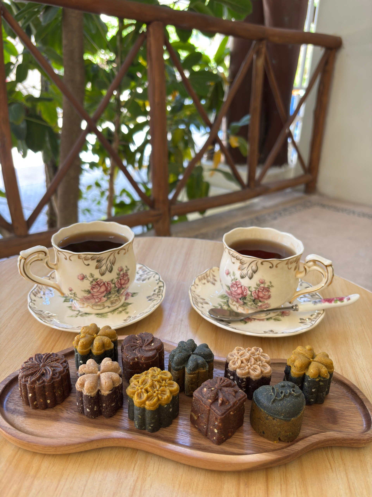
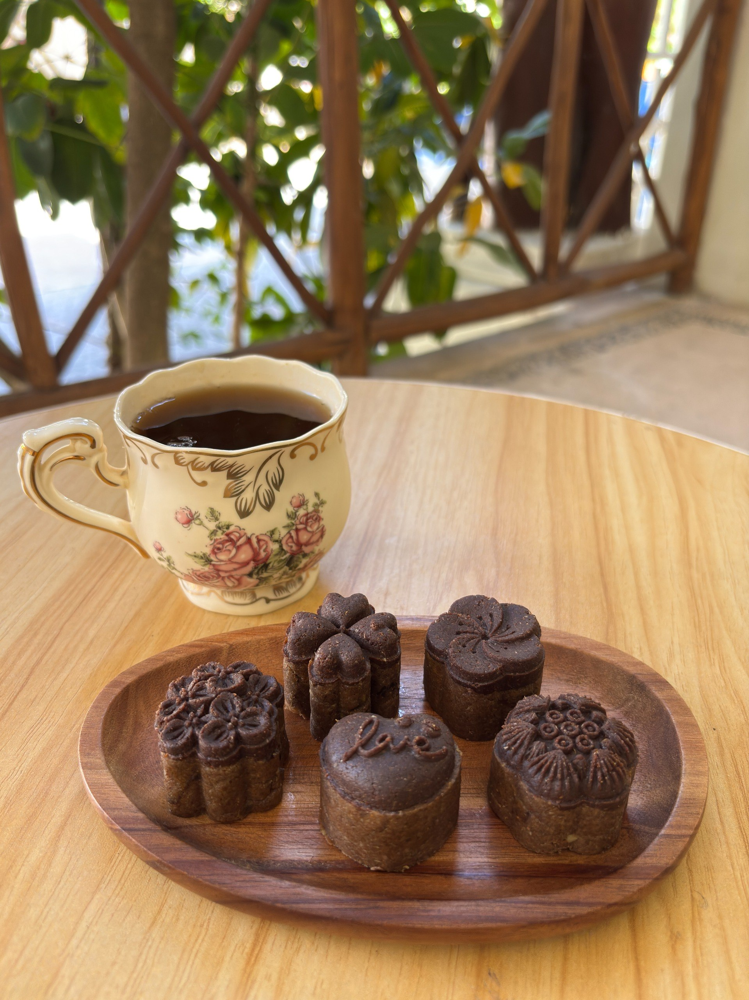
To enhance the bioavailability of active compounds, plant raw materials undergo a complex pre-processing using traditional non-industrial techniques, including maceration with coconut oil, grinding oil seeds into a paste, soaking to remove antinutrients, and gentle drying for moisture removal and sanitation. We do not use high-speed industrial mills or equipment that could destroy bioactive compounds.
No artificial flavor enhancers, colorings, preservatives, or ultra-processed ingredients
Traditional techniques from carefully selected raw ingredients
Complete nutrients, micronutrients, and bioactive substances in natural form
Suitable for vegans. Sugar-free. Gluten-free. Non-GMO.
Pack of 15 pcs. for 5 days | Pack of 9 pcs. for 3 days
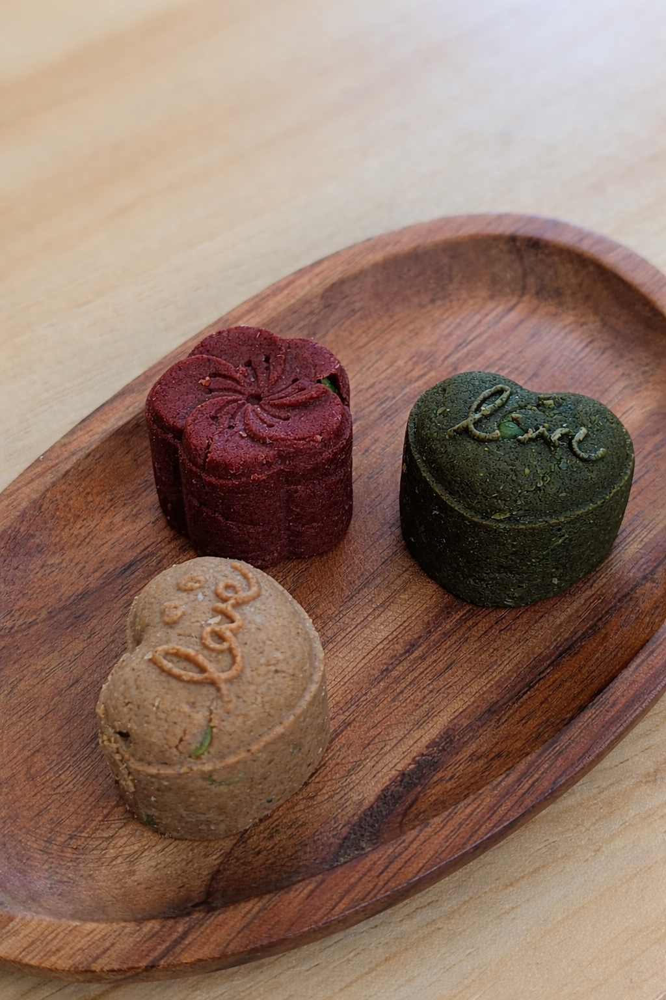
Contains more protein with an ideal amino acid profile than meat! The use of MCT oil as an energy source with very low carbohydrate content makes this product an ideal solution for an active lifestyle.
The use of a large amount of dehydrated vegetables and seaweed makes these products a highly concentrated source of a wide range of essential minerals and vitamins in their natural form and in sufficient quantities. Significant amounts of natural dietary fiber support healthy digestion and support the body's natural detox processes.
A carefully calibrated fermentation process turns the products in this set into an excellent source of bioavailable, easily digestible protein, ideal for supporting endurance and boosting metabolism.
Due to the high content of natural dehydrated vegetables and seaweed, this set helps replenish vitamins and minerals in their natural form and synergy, enriched with bioactive compounds naturally present in plants. Dehydration increases nutrient concentration by 10–20 times compared to fresh products, allowing adequate intake without overloading the digestive system, without relying on industrial supplements, and maintaining high physical and mental performance without depleting the body's reserves.
High levels of natural plant fiber support healthy digestion, support the body's natural detox processes, and enhance gut microbiota health.
A balanced fat composition enriched with omega-3 sources ensures an optimal fatty acid ratio for cardiovascular health, while MCT provides a readily available energy source for intense activity.
Low in carbohydrates increases endurance and helps reduce body fat.
protein 29 g, fat 32.5 g (including 9 g MCT), carbohydrates 10 g, fiber 35 g, calories 432 kcal.
Pack of 15 pcs. | Pack of 9 pcs.
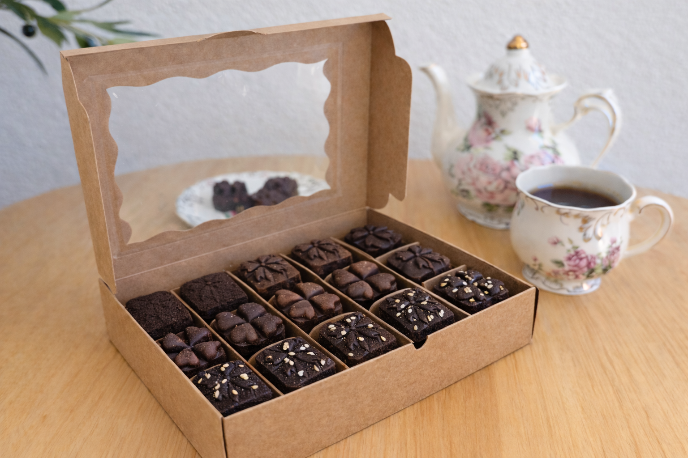
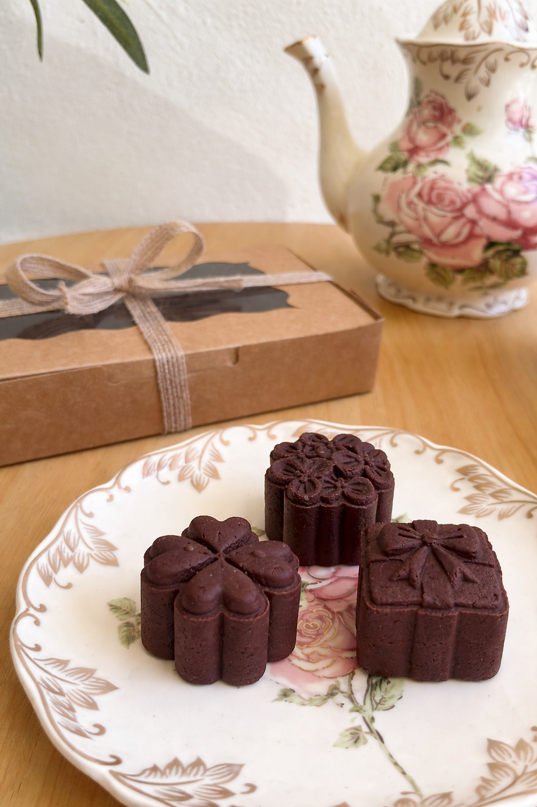
Formulated with five natural sources of caffeine with different release profiles: black coffee, green coffee, green tea, mate, and guarana. This combination provides a smooth, long-lasting energizing effect.
With a moderate caffeine content—similar to one strong cup of coffee (around 200 mg)—it is released gradually into the bloodstream over 4–6 hours. The result is a smoother, longer-lasting effect than coffee, helping you maintain steady energy throughout the day without overstimulation.
Suitable even for individuals sensitive to stimulants.
Contains a carefully selected blend of plants with adaptogenic properties, including ginseng, eleuthero, rhodiola, gotu kola, ginkgo biloba, schisandra, pollen, maca, and ashwagandha. This product supports mental and physical performance, helps reduce the effects of stress, improves metabolism, and helps combat fatigue. It also supports concentration, memory, cognitive clarity, immune function, and helps regulate blood sugar and hormonal balance.
The dosage is designed to avoid sharp stimulation and is intended for long-term support and prevention rather than acute effects. Suitable for continuous use. If a stronger effect is desired, up to 2 servings per day can be consumed; however, after 3–4 weeks, a break of 1–2 weeks is recommended.
An anti-stress product combining cocoa, cinnamon, nutmeg, ashwagandha, maca, pollen, and medicinal herbs.
This composition helps stabilize emotional state and improve mood. It supports the production of serotonin and dopamine, reduces anxiety levels, provides a mild energizing and balancing effect, lowers cortisol levels, and increases overall energy.
All three products have a delicate, slightly sweet taste of natural honey (in the vegan version, agave syrup is used instead of honey) and contain complete plant-based pea protein along with a balanced composition of plant fats, optimized for omega-3 and omega-6 content.
To enhance the bioavailability of active compounds, plant raw materials undergo a complex pre-processing using traditional non-industrial techniques, including maceration with coconut oil, grinding oil seeds into a paste, soaking to remove antinutrients, and gentle drying for moisture removal and sanitation. We do not use high-speed industrial mills or equipment that could destroy bioactive compounds.
Suitable for vegans (please note that both vegan and non-vegan versions are available). Sugar-free. Gluten-free. Non-GMO. Contains no artificial flavor enhancers, colorings, preservatives, or other ultra-processed ingredients.
Provides your body with all essential nutrients, micronutrients, and bioactive substances in their natural form and highest possible concentration.
An ideal choice for boosting performance and maintaining emotional balance in a fast-paced, high-stress lifestyle!
protein 11 g, fat 20 g, carbohydrates 32 g, fiber 11 g, calories 352 kcal
Pack of 15 pcs. | Pack of 9 pcs.
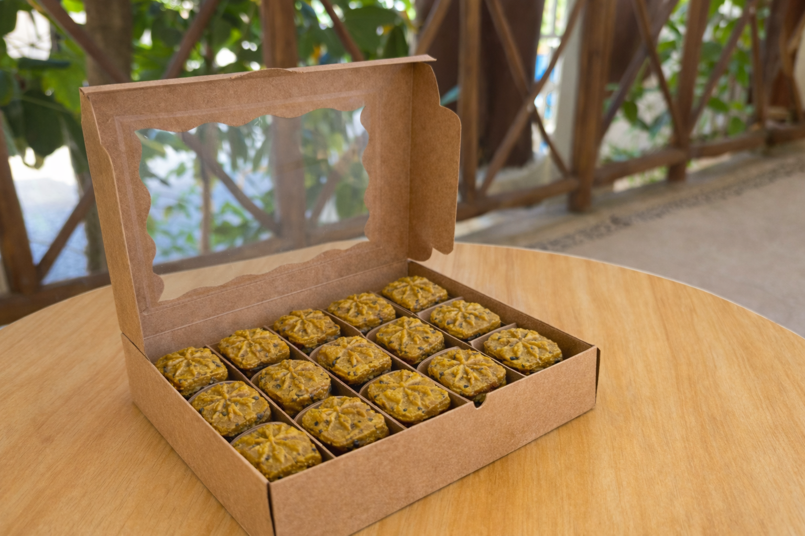
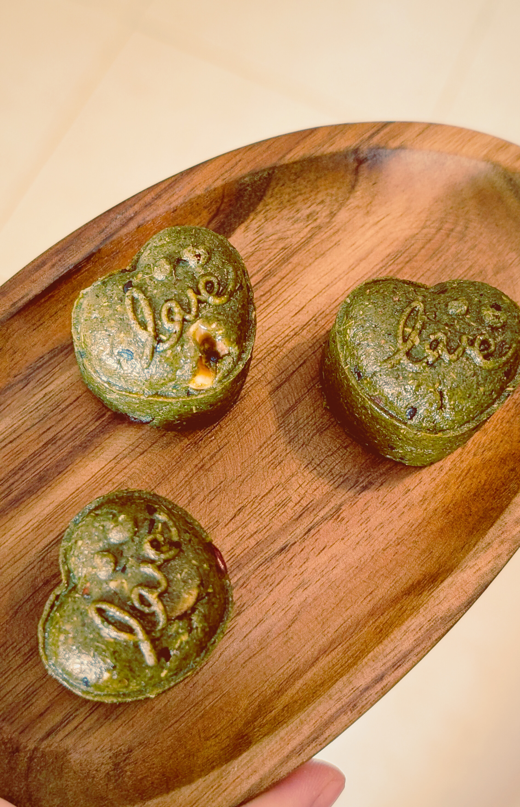
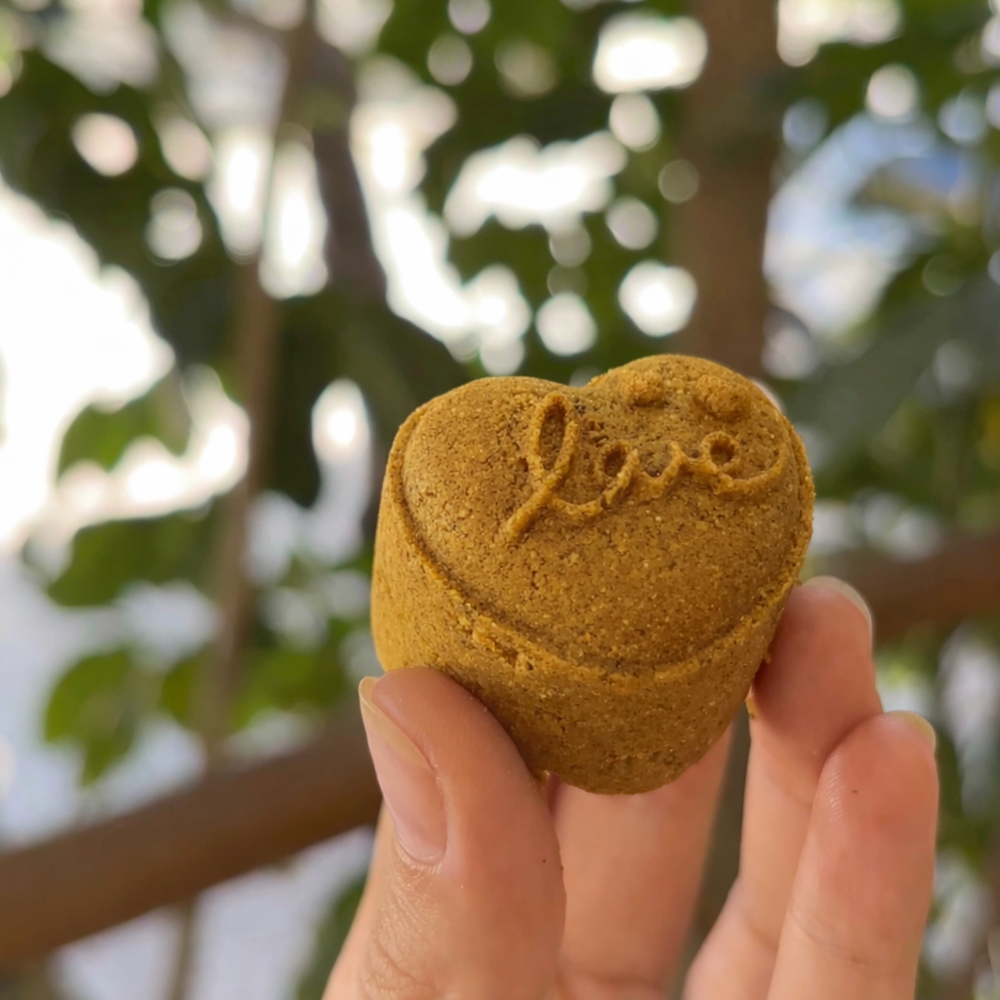
An anti-inflammatory product featuring a powerful blend of more than 20 herbs and spices known for their ability to help reduce inflammation, including joint inflammation, skin inflammation, and inflammation in the respiratory system and other areas.
An anti-infective product containing more than 25 plants, herbs, spices, and roots known for their ability to help inhibit the development of and support the body in fighting various types of infections — bacterial, viral, fungal, and parasitic.
An antioxidant product. Oxidative stress is one of the scientifically recognized factors that accelerate cellular and tissue aging. This product contains a blend of nearly 20 plants known for their antioxidant properties, supporting overall health, slowing aging processes, and helping combat oxidative stress, including that caused by exposure to strong sun.
All three products have a delicate, slightly sweet taste of natural honey (in the vegan version, agave syrup is used instead of honey) with the aroma of Indian spices and herbs, and contain complete plant-based pea protein along with a balanced composition of plant fats, optimized for omega-3 and omega-6 content.
To enhance the bioavailability of active compounds, plant raw materials undergo a complex pre-processing using traditional non-industrial techniques, including maceration with coconut oil, grinding oil seeds into a paste, soaking to remove antinutrients, and gentle drying for moisture removal and sanitation. We do not use high-speed industrial mills or equipment that could destroy bioactive compounds.
Suitable for vegans (please note that both vegan and non-vegan versions are available). Sugar-free. Gluten-free. Non-GMO. Contains no artificial flavor enhancers, colorings, preservatives, or other ultra-processed ingredients.
Provides your body with all essential nutrients, micronutrients, and bioactive substances in their natural form and highest possible concentration.
An ideal choice for supporting the body's activity and performance in a fast-paced, high-stress lifestyle!
protein 15 g, fat 23 g, carbohydrates 25 g, fiber 18 g, calories 370 kcal
Pack of 15 pcs. | Pack of 9 pcs.
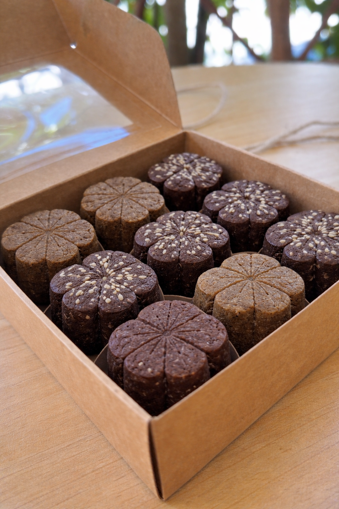
An anti-stress product. The formulation includes cocoa, cinnamon, nutmeg, ashwagandha, maca, pollen, and medicinal herbs.
This composition helps stabilize emotional state and improve mood. It supports the production of serotonin and dopamine, reduces anxiety levels, provides a mild energizing and balancing effect, lowers cortisol levels, and increases overall energy.
A sleep-support product. Contains a unique blend of more than 15 plants, herbs, spices, roots, and fruits that promote muscle relaxation, help stabilize emotional states, support calmness, reduce anxiety and tension, lower stress levels, and improve sleep quality.
Both products have a delicate, slightly sweet taste of natural honey (in the vegan version, agave syrup is used instead of honey) with the aroma of Indian spices and herbs, and contain complete plant-based pea protein along with a balanced composition of plant fats, optimized for omega-3 and omega-6 content.
To enhance the bioavailability of active compounds, plant raw materials undergo a complex pre-processing using traditional non-industrial techniques, including maceration with coconut oil, grinding oil seeds into a paste, soaking to remove antinutrients, and gentle drying for moisture removal and sanitation. We do not use high-speed industrial mills or equipment that could destroy bioactive compounds.
Suitable for vegans (please note that both vegan and non-vegan versions are available). Sugar-free. Gluten-free. Non-GMO. Contains no artificial flavor enhancers, colorings, preservatives, or other ultra-processed ingredients.
Provides your body with all essential nutrients, micronutrients, and bioactive substances in their natural form and highest possible concentration.
An ideal choice for supporting the body's activity and performance in a fast-paced, high-stress lifestyle!
protein 10 g, fat 22 g, carbohydrates 28 g, fiber 15 g, calories 328 kcal
Pack of 15 pcs.
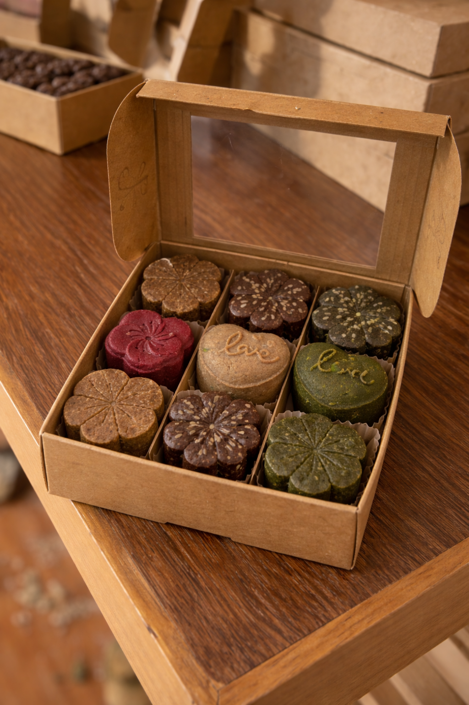
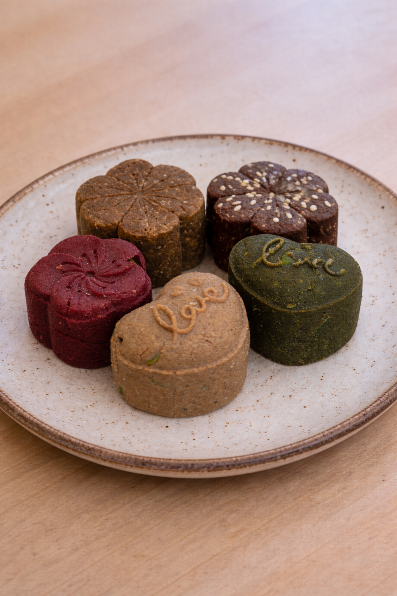
Contains more protein with an ideal amino acid profile than meat! The use of MCT oil as an energy source with very low carbohydrate content makes this product an ideal solution for an active lifestyle.
A high content of dehydrated vegetables and seaweed makes these products a highly concentrated source of essential minerals and vitamins in their natural form and in sufficient quantities. Significant amounts of natural dietary fiber support healthy digestion and support the body's natural detox processes.
Contains a carefully selected blend of plants with adaptogenic properties, including ginseng, eleuthero, rhodiola, gotu kola, ginkgo biloba, schisandra, pollen, maca, and ashwagandha. This product supports mental and physical performance, helps reduce the effects of stress, improves metabolism, and helps combat fatigue. It also supports concentration, memory, cognitive clarity, immune function, and helps regulate blood sugar and hormonal balance.
The dosage is designed to avoid sharp stimulation and is intended for long-term support and prevention rather than acute effects. Suitable for continuous use. If a stronger effect is desired, up to 2 servings per day can be consumed; however, after 3–4 weeks, a break of 1–2 weeks is recommended.
A composition including cocoa, cinnamon, nutmeg, ashwagandha, maca, pollen, and medicinal herbs. Supports emotional balance and improves mood. Stimulates serotonin and dopamine production, reduces anxiety, provides a mild energizing and stabilizing effect, lowers cortisol levels, and supports energy levels.
Pre-processing with natural plant enzymes improves protein absorption, supporting metabolism — a key factor for weight management.
Using MCT oil as the primary energy source instead of carbohydrates helps prevent fatigue and sluggishness even with reduced calorie intake.
Hunger is often associated with mineral deficiencies in modern diets. The increased quantity and variety of vegetables in this set help provide essential minerals with minimal calorie intake.
Reducing overall food intake can slow digestion. This may lead not only to digestive discomfort but also to toxin buildup. The significantly higher fiber content in this set helps support efficient digestion and elimination.
High levels of natural plant fiber support healthy digestion, support the body's natural detox processes, and enhance gut microbiota health.
During weight loss, energy levels and performance may decrease. A balanced combination of natural adaptogens and stimulants helps maintain and even improve energy, focus, and productivity despite reduced food intake.
Food is not only fuel but also an important factor in emotional balance. Calorie restriction may lead to irritability, anxiety, or low mood. The high content of natural cocoa and other plant-based mood-supporting compounds helps make the weight loss process smoother and more emotionally stable.
To enhance bioavailability of active compounds, plant ingredients undergo complex pre-processing using traditional non-industral techniques, including maceration with coconut oil, grinding oil seeds into a paste, soaking to remove antinutrients, and gentle drying for moisture removal and sanitation. We do not use high-speed industrial mills or equipment that could destroy bioactive compounds.
Suitable for vegans. Sugar-free. Gluten-free. Non-GMO. Contains no artificial flavor enhancers, colorings, preservatives, or other ultra-processed ingredients.
Provides your body with all essential nutrients, micronutrients, and bioactive substances in their natural form and highest possible concentration. Maximum benefits per calorie!
An ideal choice for comfortable weight management without hunger, weakness, or emotional stress!
protein 33 g, fat 43 g (including 9 g MCT), carbohydrates 16 g, fiber 52 g, calories 590 kcal.
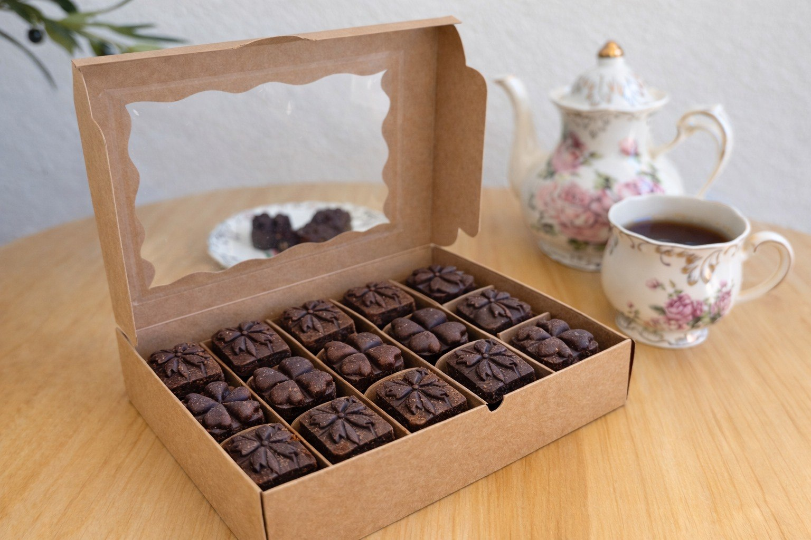